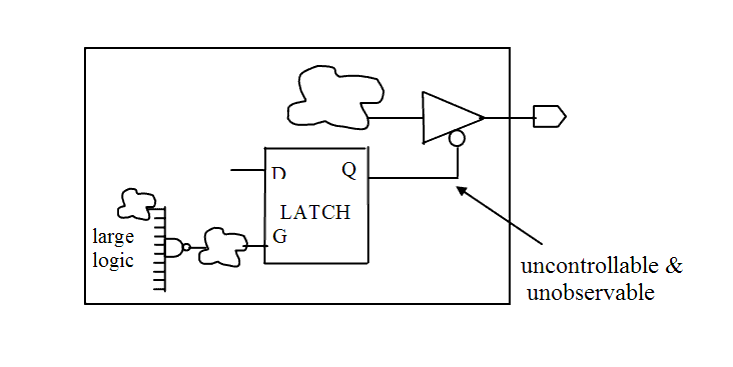

| Description | This rule fires when Leda detects enable signals of tristate or bidirectional ports that are not available at the core boundary. Making these enable signals observable and controllable helps avoid data failure. |
| Policy | DESIGN |
| Ruleset | STRUCTURE |
| Language | VHDL/Verilog |
| Type | Hardware |
| Severity | Error |
This is an example of invalid Verilog code, followed by a circuit diagram that illustrates the problem:
module ntl_str54_top ; ... inout Dout; wire Enable_unctrl; // an internal signal which is unobservable and uncontrollable wire net_01,net_02,net_03; ... assign Dout = Enable_unctrl ? net_01 : 1'bz; // NTL_STR54 fires -- enable singal is unavailable at top-level assign net_03 = Enable_unctrl ? 1'bz : net_02; //tristate endmodule